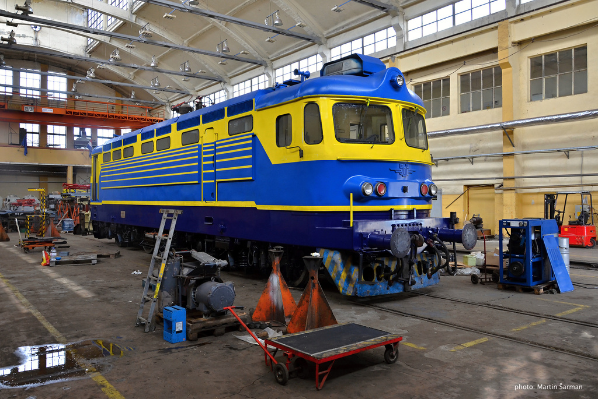

Още докато пристигат втората и третата доставка на локомотивите серия 43.000 се установява, че е необходимо нашите електрически локомотиви да са съоръжени с електрическа реостатна спирачка. Освен това и няколко други конструктивни промени (изцяло нова талига) спрямо базисната серия 43.000 започва доставката на новите локомотиви през юни 1975 г. Модификацията е със заводско означение 68Е, а в БДЖ са означени със серия 43Р. Последното е нарушение на системата от 1965 г., която не допуска буквени символи в експлоатационния номер. Друго отклонение е продължаването на номерацията на серия 43.000 в серия 43Р.000. Така са изпълнени 5 доставки от 88 машини до 1980 г. включително. Тогава се преразглежда становището за максимална допустима скорост на локомотивите. Решено е отново да се промени преводното отношение на колоосните редуктори (от 1:3,348 на 1:3,95) и така да се подобрят теглителните възможности на машините. Изпълнени са още две доставки (60 машини) с новите редуктори (за скорост 110 км/ч) през 1982 и 1983 г. без други изменения. Първите две партиди (от 43Р-57 до 43Р-100 са зачислени в депо Подуяне, а третата в депо Горна Оряховица. Четвъртата и петата са разпределени между депата в Г. Оряховица, Бургас, Пловдив и Подуяне. Последните две доставки са разпределени между Подуяне и Бургас. Впоследствие серия 43Р е разпределяна според нуждата и към края на 1986 г. домува в 8 основни депа. Първата бракувана машина от серията е 43Р-86 през 1980 г. след участие в катастрофа.
До края на 2007 г. са бракувани общо 11 локомотива от серия 44 и един брой от серия 45. Някои от тези машини са послужили за основа възстановяване през 80-те години в отделни депа, а след това получават т.нар. „юбилейни номера“. Последните от 1992 г. са преномерирани на подсерия 43 – 300 (от 43 – 301 до 43 – 310). От 1 януари 1988 г. от локомотивна серия 43Р са образувани две нови серии 44 и 45. В първата са локомотивите с конструктивна скорост 130 км/ч, а във втората – тези с конструктивна скорост 110 км/ч. Самите локомотиви запазват поредните си номера. Това дава възможност на всеки от локомотивите в двете серии ако се смени преводното отношение на редукторите му да премине от едната в другата серия и да запази поредния си номер. Например локомотив 44 140 е със сменени редуктори и е преномериран на 45 140.
| При доставка | Към 2017г | Към 2022г |
|---|---|---|
| 43Р-57 | ..... | Бракуван след недовършен КР в ЖП завод София. Донор на части за други локомотиви. В локомотивно депо Подуяне |
| 43Р-58 | 44 058.6 | Нарязан |
| 43Р-59 | 43 310.9 | Бракуван 1983 г., възстановен 1984 г. с юбил. № 43–1945, от 1992 г. – 43 310.2 Запалил се около 17:30, 11.08.2019 г. в междугарие Белово-Костенец, като помощен бутащ локомотив прикачен зад последния вагон на товарен влак Нарязан през 2021 г. |
| 43P-60 | 44 060.2 | Преминал ПР през 2021 г. |
| 43P-61 | 44 061.7 | ..... |
| 43P-62 | 44 062.5 | преминал КР в Словакия 2022г. В движение от Август 2022г. Преди това е бил на депо Варна. |
| 43P-63 | 44 063.3 | Преминал ПР през 2021г. |
| 43P-64 | 44 064.4 | Катастрофира с 44 077 на г. Огняново. Бракуван 1989 г. Възстановен – 1989 г. с юбил. № 44–045. От 1992 г. – с 44 064.4. Продаден 2016 г. на чешки (в югоизточна гранична област Моравия) жп сервиз „CZMO PREROV“. Нарязан |
| 43P-65 | 44 065.3 | В капитален ремонт |
| 43P-66 | 44 066.6 | Преминал капитален ремонт в Словакия през 2021г. |
| 43P-67 | 44 067.4 | Горял 29.06.2017 (В междугарието Жельо войвода-Сливен) начело на пътнически влак Сливен-Бургас, Не е в движение, изоставен в локомотивно депо Русе. |
| 43P-68 | 44 068.2 | ..... |
| 43P-69 | 44 070.8 | Преминал Капитален Ремонт в Чехия през 2021г, след повреда не се движи в продължение на 4месеца, въстановен и вкаран в експлоатация. |
| 43P-71 | 44 071.9 | Продаден на 17.12.2015 г. на „Railtrains“ – Словакия. Челно е шаблониран с № 242 561 – 1 |
| 43P-72 | 44 072.4 | Продаден 2013 г.На „ТБД- Товарни превози“ ЕАД |
| 43P-73 | 44 073.2 | Продаден на „ТБД- Товарни превози“ ЕАД |
| 43P-74 | ..... | Опожарен на 26.06.2013 г. в междугарието Бойчиновци-Криводол. Бракуван и нарязан в локомотивно депо Мездра. |
| 43P-75 | ..... | Продаден на Advanced World Transport Чехия. |
| 43P-76 | 44 076.5 | ..... |
| 43P-77 | ..... | Катастрофира с 44 064 на г. Огняново. Бракуван 1989 г. |
| 43P-78 | 44 078.1 | Преминал ПР през 2021г. |
| 43P-79 | ..... | Нарязан |
| 43P-80 | ..... | Продаден на Advanced World Transport Чехия. |
| 43P-81 | ..... | Опожарен на 13.04.2016г. в междугарието Айтос–Черноград, нарязан. |
| 43P-82 | 45 082.3 | Преустроен за V=110 км/ч |
По аналогия на извършващата се модернизация на локомотивите серия 46.000 в хърватската фирма „Končar Group“ са изпратени и два локомотива – 44 104 и 44 145 през 2004 г. Като модернизирани те са преномерирани на 44 304 и 44 345. Само месец по-късно е решено да заемат първите номера в серията и са преномерирани съответно на 44 001 и 44 002. По-нататъшната модернизация на машините от серията е преустановена.

Модернизираните 44 001 и 44 002 към настоящ момент 2022г.
Локомотивите серии 44 и 45 са типичен пример за това, че при добро обслужване и поддръжка може да се разчита на значително по-дълъг експлоатационен живот от предвидения. Тези машини са основата на локомотивния парк по електрифицираните участъци на БДЖ вече 45 години.